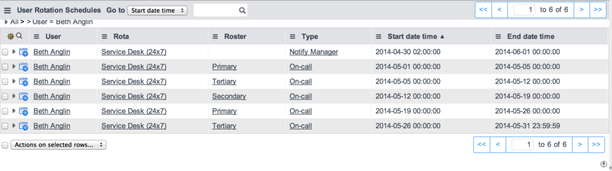
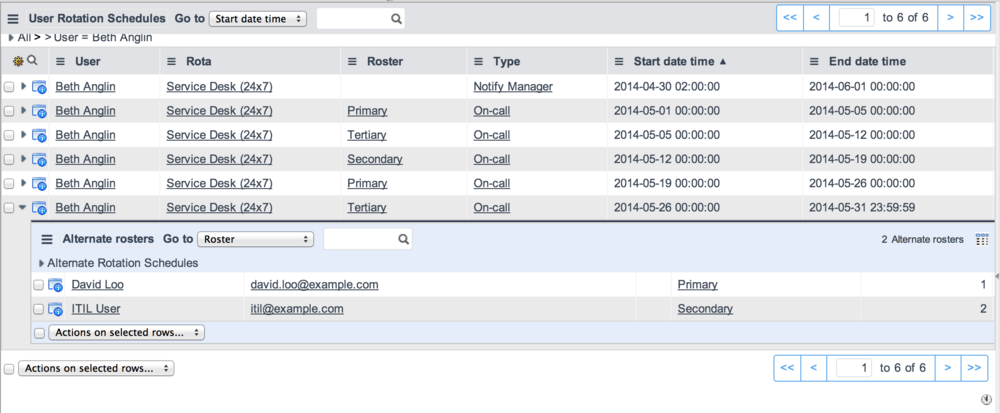

Using On-Call Scheduling
| |
Note: This article applies to Fuji and earlier releases. For more current information, see On-Call Scheduling at http://docs.servicenow.com
The ServiceNow Wiki is no longer being updated. Visit http://docs.servicenow.com for the latest product documentation. |
Contents
1 Overview
Users with the itil role can use on-call scheduling functions to:
2 Viewing My Group Schedules
Navigate to On-Call Rotation > My Group Schedules to see the schedules for groups that you are a member of. Open a schedule to see the details.
3 Viewing My Schedule
You can view when you are on-call and the escalation lineup for a particular date range.
- Navigate to On-Call Scheduling > My Schedule Report.
- In Show for, select a date range.
- Click Submit.
- 
- This shows the rota, the roster, and the start and end times for each timeslot.
- To view alternate rosters, expand an entry by clicking the arrow.
- 
- This shows other rosters for that timeslot. For example, if you are the primary contact, this shows secondary and tertiary contacts for that timeslot.
{kind=link}
{kind=link}
4 Viewing Calendars
A calendar shows the rotation schedule in light blue and the roster in deep blue for a specific rotation. If there is more than one rotation schedule on a particular day, the secondary rotation is shown in green and the tertiary in yellow.

On-call calendars provide a way of visualizing the on-call rotation for a group. Navigate to On-Call Scheduling > On-Call Calendars. Initially, the display defaults to the first group with a roster. In the Group choice list, select the group you are interested in.
Each time slot specified for the group’s roster is displayed along with the on-call person assigned to that slot.
To navigate in the calendar:
- Use the , , and buttons to change the calendar’s display to monthly, weekly, and daily views respectively.
- Use the left and right arrows beside the date to move the calendar back and forward in time.
- Use the icon beside the date to move to a specific date.
- Use the combined calendar and clock
 icon to view the calendar as a timeline. The on-call shifts are shown as horizontal bars for each day. By default one week is shown. Use the + and - buttons to expand or collapse the timeline to 21, 35, 49, 63 days and so on.
icon to view the calendar as a timeline. The on-call shifts are shown as horizontal bars for each day. By default one week is shown. Use the + and - buttons to expand or collapse the timeline to 21, 35, 49, 63 days and so on.
{kind=link}
{kind=link}
{kind=link}
5 Viewing Reports
5.1 Schedule Report
To produce a report of users who are on-call or catch-all for for one or more groups during a specific time period:
- Navigate to On-Call Scheduling > Schedule Report.
- Select the start and end dates for the report.
- Enter the first few letters of the desired group into the Name field to see a list of groups that start with those letters, or select the All groups check box to see a list of all available groups.
- Select at least one group in the slushbucket.
- For Report style, select:
- Table: to display the report on-screen. as a list that can be sorted, filtered, and configured like other lists.
- Formatted: to generate a report in PDF format.
- Click Run Report.
- If you selected Formatted, click the Click to Print button to print the report.
- The report shows the on-call commitments for all selected groups during the selected date range.
The printed report looks like this:
{kind=link}
5.2 Escalations Report
To generate the escalations report, navigate to On-Call Scheduling > Escalations > Escalations Report. The escalations report shows you what the escalation sequence is and which rules apply for the selected date. For each group, you can choose to show either the active roster members or the on-call person. If you choose active roster members, the on-call persons and catch-all persons are listed in the escalation order, along with their delay times. If you choose the on-call person, you can quickly find out who is currently on duty.
In both reports, you can see the on-call persons only for the groups you are authorized to see. If you select a group you have no authorization for, a message appears stating that a number of rows have been removed due to security constraints. Security restrictions apply only if high security is active on the instance. High security is active by default for all new instances.
6 On-Call Reminders
On-call scheduling includes a scheduled job called On-Call Reminders. This job runs the OnCallRemindersNG script include daily to check if any on-call members need to be notified about upcoming on-call commitments.
To define the number of days before email reminders are sent to users:
- Navigate to On-Call Scheduling > On-Call Calendars.
- Right-click the Rota.
- Select Edit rota.
- Change the Reminder lead time (days) field for the on-call schedule record or any of its rosters.
- The reminder lead time defined on a roster is always respected. If no lead time is defined, the on-call schedule's reminder lead time is used. If the reminder lead time is not defined for either the on-call schedule or its rosters, then a default of 2 days is used.
| |
Note: Keep in mind that the Reminder lead time on the Roster form is different from the # reminders and Time between reminders fields in the Escalation Settings section of the form. The escalation settings are only used to configure reminders for escalations. The Reminder lead time is in the Reminder Communication section of the Roster form, and is used to email reminders for upcoming on-call commitments. |
Users with the admin or rota_admin role can resend reminders, which can be useful to inform group members about changes in their shift.
- Navigate to On-Call Scheduling > My Group Schedules.
- Open a specific rota.
- Click Resend reminders. The option is also available when editing a rota for a group in On-Call Calendars.